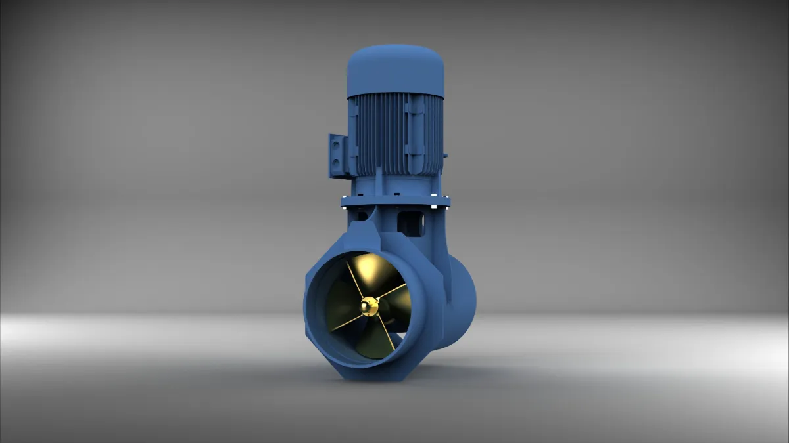
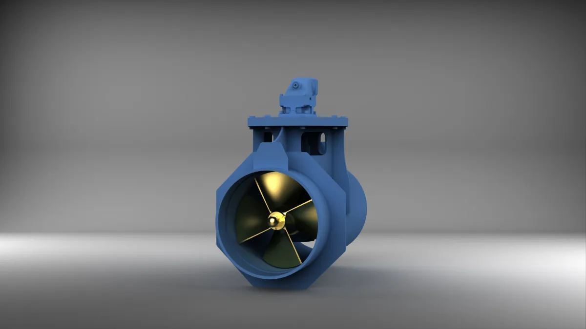

TUNNEL THRUSTERS / BOW THRUSTERS / STERN THRUSTERS / TRANSVERSE THRUSTERS
Tunnel Thrusters, also known as bow thrusters, stern thrusters or transverse thrusters, provide a side force,or transverse thrust, to support mooring operations or station keeping.
DEC manufactures tailor made bow thruster, stern thrsuter for ships, tugboats and mega yachts. DEC Tunnel Thrusters support the mooring or harbour operations and extends maneuvering ability. When applied in Dynamic Positioning systems, extends the Dynamic Positioning capability of offshore supply vessels.

✅ Well proven design
✅ Low maintenance cost due to specially designed seal system by DEC
✅ Electric or Hydraulic Driven
✅ 4 Blade-Fixed Pitch propeller
✅ Propeller Material: Cu1 or Cu3
✅ Tunnel thrusters are available in the power range from 22-500 kW
✅ Propeller Diameter: 440mm to 1400mm
✅ Thrust Force: 2.6kN to 70kN

OPTIONS
🔹 Whellhouse control panel
🔹 Wing Panels for Port and Starboard
🔹 Horizontal/Vertical Motor Application
🔹 Increased Tunnel Length
🔹 Additional Longitudinal and circumferential stiffeners can be added on customer request
🔹 Classification by all major classification societies
🔹 Supervision for Start-up&Commisioning